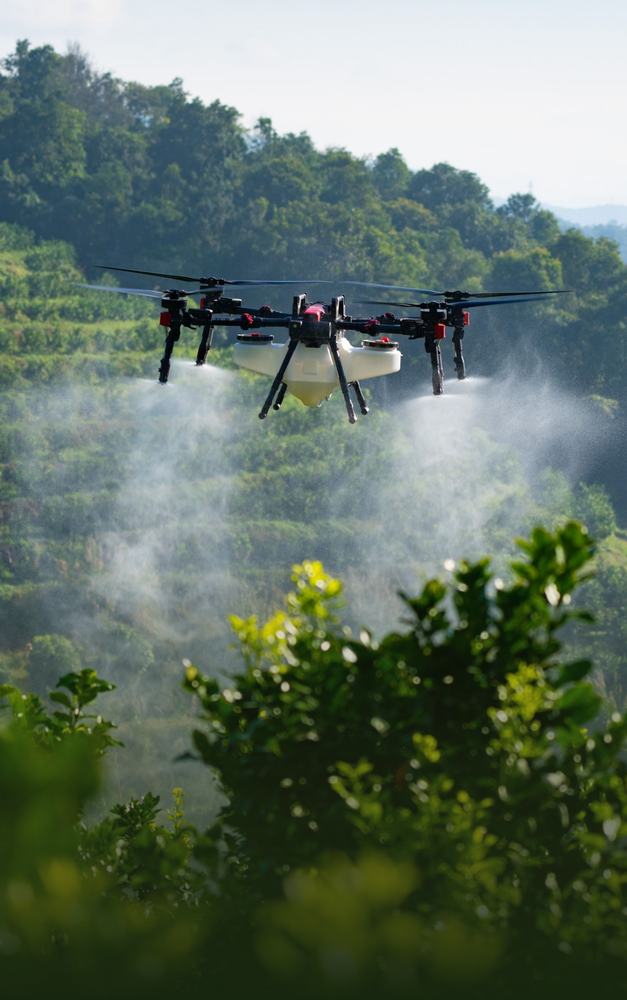
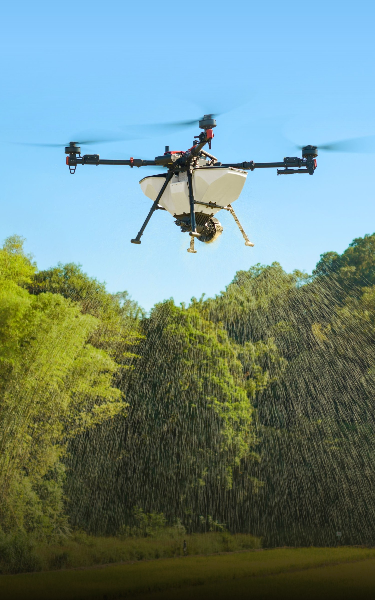

Обработка полей
агродронами.
Опрыскивание, внесение удобрений
и посев с XAG P150 MAX.
Применение
Одна платформа. Разные задачи в поле.
Опрыскивание
Внесение средств защиты растений и листовых подкормок над посевами, садами и виноградниками.
RevoSpray 5 · этот модуль показан в 3D
Рассчитать опрыскивание
Устройство
Что обеспечивает скорость,
точность и полезную нагрузку.

80 кг
Полезная нагрузка
Одна платформа для опрыскивания, внесения гранул, карт полей и перевозки грузов. Модуль выбирается под задачу.
- максимальная скорость платформы
- 20 м/с
- максимум с RevoSling
- 13,8 м/с
- защита от воды
- IPX6K
Загружаем 3D. Пока показываем сохранённый рендер.
Данные XAG для P150 MAX; максимумы зависят от комплектации, среды и режима работы. Зарядка — лабораторный замер 30–95%. Ширина обработки зависит от высоты, нормы и условий; подача гранул — от их свойств. Модель — внешняя реконструкция по фотографиям, не заводской CAD; вращение винтов демонстрационное.
Характеристики производителяОбсудим
ваш участок.
Пришлите площадь, культуру и расположение поля. Уточним задачу и условия выезда.